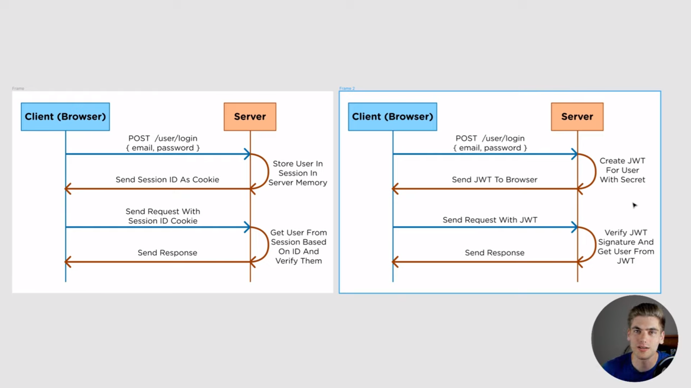
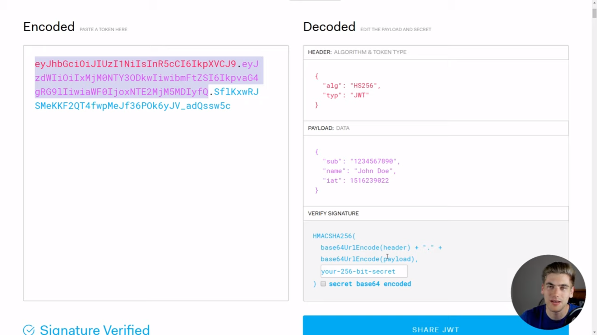
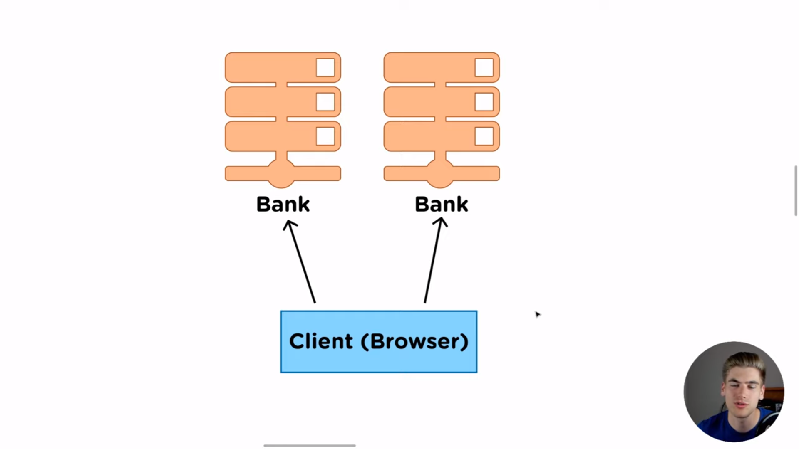

JSON Web Token, famously known as JWT, are used for authorization & NOT authentication
Authentication: Logging in a user ~ use of username & passowrd
Authorization: Esnuring that the the user sending requests to your server is the same user that logged in during the authentication process
This is done using JWT
The token created has the user's information in it in encoded form
Heder.Payload.SecretKey
In JWT, we can use one token to be able to be authorized in another server, say of the same organization
When logging into server 1, as usual, the token is created and the token sent to the client to be stored. The user can use this token to access information say from server 2 since they belong to the same organization
How?
The secret key used to generate the token is usually stored in the servers. The same secret key can also be stored in another server especially cases where you'd want to have the users have seamless authorization in accessing certain resources
When a request is sent to the server, the secret key is used to decrypt the the token since it's the same key that was used to encrypt it during login. The same token (since it's stored on the client side) can be used to access information in the other server, as long as the other server has the same secret key.
The token can be destroyed or expire based on the EAT(Expired At) specified in the payload
Use cases can also be when the company has too many users and therefore has various servers in case there could be high data traffic. The Load Balancers would kick in and reroute other users to the second server but will still be able to access information due to fast authorization due to having the token on the client